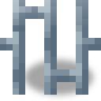
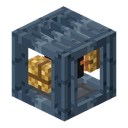
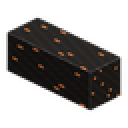
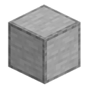

聚落道路
alaindustrial:town_road
概览
聚落道路是与地面齐平铺设的完整方块：人可以像走在地板上一样在上面行走。它是一个深色回火铁箱体，顶部是格栅，内部正中间穿过一根包着橡胶绝缘层的铜线。这根导线是能量网络的真正分段：道路与电缆、机器和住宅进线口的连接方式和电缆完全一样。市政厅是定居点的心脏，道路就是它的血管：定居点核心的能量沿道路送到轮班工的房屋。导线中有电流通过时，导线节点上的灯会亮，方块本身也会发出微光。
小例子： 在核心的「建设」标签页中下单修复一座房屋。无人机会清理场地，从定居点道路网铺一条路到这座房屋进线口的插口，然后重建房屋：房屋就接上了核心。把中间的一块道路拆掉，房屋那一行就会显示「与核心没有连接：道路在 … 处中断」，并标出断开的位置。
工作方式
- 格栅里的电缆。 每块道路都是一段带实时缓存的电缆，和绝缘铜缆一样。相互接触的道路和玩家的电缆是同一条线路。内部的导线像电缆一样连向相邻方块：直线、转弯、T 形、十字、向上和向下。
- 建筑的连接。 只有当房屋的进线口与核心在同一个能量网络中时——通过道路、通过玩家的任意电缆或两者兼有——房屋才计入定居点。断开处之后的一切都会断电：道路网不会建造通往核心的第二条路，但你可以用自己的电缆接成环路。
- 市政厅的进线口就是核心的出口。 市政厅也有一个进线口，在正面。它把核心的储能提供给线路：送进它的能量为核心充电，而核心把超出自身维护储备的部分交给道路。各住宅进线口一点一点地取用这些能量——每个进线口每刻 8 EU/FE。
- 定居点道路网。 定居点的道路是一棵树，而不是通往每座房屋的单独线路。主街从市政厅进线口出发，沿定居点的长边延伸，街道从主街以直角分出，通往各建筑的进线口；之后的每座建筑都接到已有道路网上最近的一点。街道会绕开建筑、水、树木和玩家的方块，不会铺在别家房屋的门口，并且更愿意沿着小镇的旧铺砌街道走——道路方块会替换旧人行道的石板。道路网中没有环路：从每一格到市政厅都只有一条路。
- 台阶最多一格。 相邻道路方块的高度差最多一格，这样轮班工可以在上面行走和跳跃。地面不平的地方，无人机会削掉凸起（道路上方最多 3 格）或用泥土或石头填平坑洼（道路下方最多 3 格）；短小的凸起或凹坑，道路会保持在同一高度通过。在台阶处，上层道路下面还埋着一块道路方块，藏在地里：导线始终是一条线。
- 在进线口旁。 进线口前的最后一格与门口的地板齐平。如果进线口的插口高一格，这一格上方会立起一个「升线段」：它没有框架，只有导线，导线从下方道路的格栅中升起，接进进线口的插口。
- 无人机铺设道路。 道路是建筑工单中的一步：清理、道路、建造。无人机只铺从建筑进线口到道路网之间缺少的格子（以及还没有的那段主街）。开工前，「显示蓝图」会用虚影显示路线；核心「建设」标签页中的「定居点道路网」一行可以一次显示整个道路网。道路方块和填坑用的泥土，无人机从城镇调度台的缓存中取用，核心为每放置或移除一个方块支付 EU/FE，和任何工地一样。路线上的草、花、灌木和雪，无人机会自己清走。玩家已经铺好的道路或电缆它不会动——这样的格子已经完成。路线上有玩家的方块或带内容物的方块就是障碍：工作会停下，原因为「受阻于：…」。如果没有高差不超过一格的路线——原因为「没有可铺设道路的路线」。
- 街道预留。 定居点未来街道的格子是预留的：新房屋不能在上面奠基（「受阻于：定居点街道」）。
- 发光。 在最近一秒内有能量通过该分段时，导线会发光（亮度 4）。
能量
| 字段 | 数值 |
|---|---|
| 导线 | 绝缘铜线 |
| 传输能力（分段缓存） | 12 EU/FE/刻 |
| 封包上限 | 32 EU/FE（LV） |
| 损耗 | 每格 0.01——与绝缘铜缆相同 |
| 触电 | 无：导线是绝缘的 |
方块属性
| 字段 | 数值 |
|---|---|
| 形状 | 完整的 16³ 立方体，可以像地板一样在上面行走。例外是进线口旁的「升线段」：只有 6×6 的导线，没有框架 |
| 外观 | 深色回火铁箱形框架，顶部四根横跨导线的铁条；内部是橡胶绝缘导线，每个接头处有带铜尖的黄铜接头套，节点上有一盏灯（通电时亮）。如果导线向下通往台阶，底部也是格栅——从下面能看到接头。两块相邻的道路是一条通道：它们之间的侧壁不绘制 |
| 阴影 | 不会在旁边的地面上投下阴影，和玻璃一样 |
| 光照 | 导线有电流时为 4，否则为 0 |
| 硬度与工具 | 镐，硬度 2，爆炸抗性 6 |
| 掉落物 | 道路本身；分段中的电量不会保存在物品里 |
配方
聚落道路（工作台），产出 3 个：三根回火铁栏杆、三根绝缘铜缆、三块平滑石头。
| 行 | 槽位 |
|---|---|
| 1 | 回火铁栏杆 ×3 |
| 2 | 绝缘铜缆 ×3 |
| 3 | 平滑石头 ×3 |
进阶
相关内容
合成
有序合成


▶
×3
聚落道路